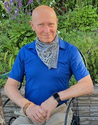
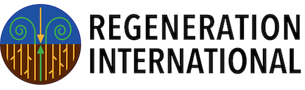
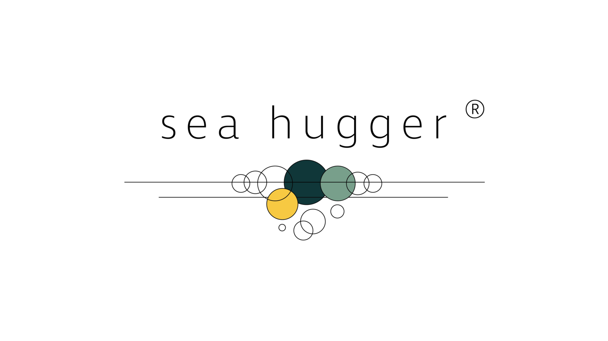
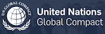
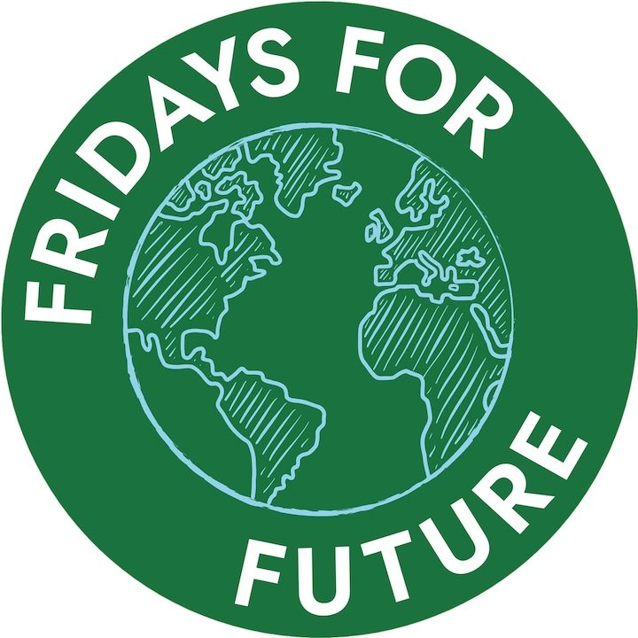
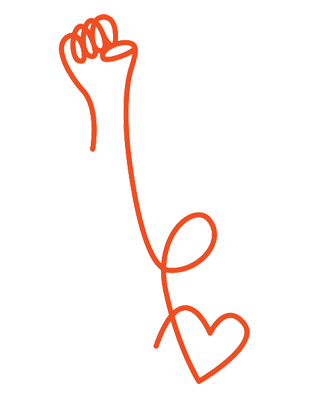

are U
still Curious?
Sustainable solutions everywhere


Sustainable solutions everywhere
What are you doing to strengthen your being in ways that are supported by science and can bring you to your highest potential? How then will you use this potential to lead and participate in the next step toward a life that is lived with purpose and service? Live your best self! We are all here to love and support one another. All things are possible.
i'm Don
I am interested in sustainablilty. Our Planet supports us with life in abundance. How do we maintain our responsibility to long-term survival of the eco-system? I believe that conscousness is raising with regard to the challenges as well as solutions; some proven and some potential. I would like to support a continuing evolution of being in balance with; whether it be our own personal issues, how we are treating each other, or how we treat our mother Earth and all of our fellow species.
Look at my Why page to see more on what I believe.
The second law of thermodynamics states that any part of a system that is isolated will naturally degrade into chaos. By isolating ourselves from the environment, and each other, we experience continuing breakdown of our personal relationships as well as the habitat that supports our very being. We come from nature at inception and birth; we return to it at death. Environmental nutrients support our growth throughout our lifetime.
Many times we look at symptoms and then look for a bandaid solution that masks the symptom. This is true in our relationships, medicine and other disciplines as well as environmental issues. We need to take the time to look at the whole and determine root cause so we can move to results that enable for the long term. In other words how do we look at cause and effect and determine our needed shift to reach a desired sustainable change that will last.
A Stanford Professor in statistics (Name Unknown) "Facts without theory is nonsense. Theory without facts is bullshit."
Investigate what is not working.
Seek solutions to the problem.
Educate to bring change.
Take Action.
 The United States experienced the dust Bowl 1920's due to among other things lack of crop rotation and composting for regenerating soil.
Petroleum products were
introduced after WWII. Nitrogen and phosphates to green crops in 50's, but with
loss of nutrients. As I was growing up in the 1950's in an agricultural area I observed the start of large corporations taking over family farms and introducing herbacides and various other sprays to the crops to control insects as
well. By the late 60's we were having conversations about how the cancer rates were so much higher than what we experienced in our youth. As I have continued to observe the evolution of GMO plants and herbacides, I continue to
see the
reduction in the overall health of the population, along with the associated higher healthcare costs. I believe there is a direct coorelation between the use of GMO plants along with the herbacides / pesticides and the health
issues we
are experiencing.
Research
has shown that the GMO, herbacide model is not working as the crop yields are dropping each year. There are farmers that are now changing that paradigm back towards healthy soil and organic methods that produce much higher crop
yield.
The United States experienced the dust Bowl 1920's due to among other things lack of crop rotation and composting for regenerating soil.
Petroleum products were
introduced after WWII. Nitrogen and phosphates to green crops in 50's, but with
loss of nutrients. As I was growing up in the 1950's in an agricultural area I observed the start of large corporations taking over family farms and introducing herbacides and various other sprays to the crops to control insects as
well. By the late 60's we were having conversations about how the cancer rates were so much higher than what we experienced in our youth. As I have continued to observe the evolution of GMO plants and herbacides, I continue to
see the
reduction in the overall health of the population, along with the associated higher healthcare costs. I believe there is a direct coorelation between the use of GMO plants along with the herbacides / pesticides and the health
issues we
are experiencing.
Research
has shown that the GMO, herbacide model is not working as the crop yields are dropping each year. There are farmers that are now changing that paradigm back towards healthy soil and organic methods that produce much higher crop
yield.
Another reason we need to restore our soil is that it is the key to Environmental Health. Soil that is restored to its natural state is the most effective carbon sequestration. There is no way to draw carbon out of the atmoshphere that is more practical than the regeneration of soil and the move towards regenerative agriculture.
Resources for Soil Regeneration:
The Biggest Little Farm The following movie is about Apricot Lane Farms: a traditional foods farm started by John and Molly Chester, a husband and wife team, who left their jobs in Los Angeles to become farmers
and pursue their dream vision of starting
Apricot Lane
Farms in 2011. Located 40 miles north of Los Angeles, the farm is dedicated to the mission of creating a well-balanced eco-system and rich soils that produce nutrient-dense foods while treating the environment and the animals with
respect.
Apricot Lane farm residents include pigs, goats, sheep, chickens, ducks, guinea hens, horses, highland cattle, and one brown swiss dairy cow named “Maggie.” Many of which, you will meet in the BIGGEST LITTLE FARM. The land consists
of
Biodynamic Certified avocado and lemon orchards, a vegetable garden, pastures, and over 75 varieties of stone fruit. (Above explanation lifted from The Biggest Little Farm website)
I am so excited by this clear example of the ability to turn our entire food production system to healthy sustainbable nutrient dense foods within seven years. (Highly recommend this movie / documentary with great cinematography).
The Biggest Little Farm Movie
Soil Regeneration Explanation at Wikipedia a particular form of ecological regeneration.
Wikipedia Soil Regeneration
Dr. Zach Bush is passionate about regenerating our soil to bring back health to produce nutrient dense foods without the need for genetically modified organisms and no herbacides or pesticides.
Dr. Zach Bush
The Need To Grow is a new documentary on technologies and projects that are educating on the need for sustainable soil that is healthy to produce high nutrition food. Search for this film as it is currently does not seem to have a website that is static.
 Vesper Meadows is a Southern Oregon restoration program that is educating on what it takes to return an enviroment to its original purpose. Community
engagement in science, restoration, wild food cultivation, and nature-inspired art.
Vesper Meadows is a Southern Oregon restoration program that is educating on what it takes to return an enviroment to its original purpose. Community
engagement in science, restoration, wild food cultivation, and nature-inspired art.
Vesper Meadow
 Regeneration International is a website with many resources that show how farming techniques can help in reversing climate change by rebuilding soil
organic
matter and restoring biodiversity.
Regeneration
International
Understanding Ag is a consulting company that provides education and support for farmers so that they may family farmer future with a balanced ecosystem.
Understanding Ag
Kiss the Ground is and organization with much the same purpose as my wesite (sustainability and regeneration). They are starting with soil.
Kiss The Ground
Soil Value Exchange is helping reverse climate change by paying ranchers and farmers to restore soil health across America's hundreds of millions of acres
of
grazing lands.
Carbon Storage
Green Bronx Machine is educating and training students in building an agriculture system that is supportive of the health and well being of the local communities in which they live and serve.
Green Bronx Machine
NW Raw Organic Juice Bar here in Ashland is a great example of providing clean results from the above efforts to clean our soil and provide nutrient dense foods. It is and energetic outpost in todays culture where fast
food is king. It is a delight to experience juices, salads, bowls, cleanse programs, espresso and more. Check out their website here to see what is possible:
NW Raw
Baker Creek carries one of the largest selection of seeds from the 19th century.
Baker Creek Seeds
As stated on their web site, Seed Savers Exchange
aims to conserve and promote America’s culturally diverse but endangered garden and food crop heritage for future generations by collecting, growing, and sharing heirloom seeds and plants.
Seed
Savers Exchange

Humans have polluted most of the water on the planet. It is time for us to take this matter seriously and provide the restoration processes that have been tested with success. Additionally, we need to cease the use of toxic
elements
that pollute our source of life.
Resources for Clean Water:
SeaHugger: The ocean is vitally Important to the health of our planet and protecting it should be our highest priority.
FOUNDER Shell Cleave:
After witnessing first hand the devastation of human impact on the Great Barrier Reef, the coasts of Asia and Mexico, and increased plastic on the beaches at home in California, Shell Cleave decided she could no longer idly stand
by
and watch her beloved Mama Ocean being used as a dumping ground. She closed down her Technical Writing Business of 25 years and founded Sea Hugger in 2017 with the help and support of her family. (Above explanation lifted from
seahugger website).
Sea Hugger
 ECOsmarte water: Want clean chemical free, salt free water for your home and pool? Check out this system which removes all chemicals and delivers
drinkable
water throughout your property.
ECOsmarte Water
 Clean Water Action: To protect our environment, health, economic well-being and community quality of life. Clean Water Action organizes strong
grassroots groups and coalitions, and campaigns to elect environmental candidates and to solve environmental
and community problems. (Above explanation lifted from clean water action website).
Clean Water Action: To protect our environment, health, economic well-being and community quality of life. Clean Water Action organizes strong
grassroots groups and coalitions, and campaigns to elect environmental candidates and to solve environmental
and community problems. (Above explanation lifted from clean water action website).
On their website you can check clean water projects and progress at the national level as well as the state level.
Clean Water Action
The Water Project: Every day in rural communities throughout sub-Saharan Africa, millions of people suffer from a lack of access to clean, safe water. For school-aged children it's a burden that traps them in
poverty.
(The above was lifted from the
water project website).
The Water Project
Save the San Francisco Bay - Delta estuary for our children and future generations.
Save The California Delta
C3
Communicate
Cooperate
Collaborate
We don't have to agree on every subject. We need to look for areas where we agree and work together to build bridges. Then as we educate each other, search for and implement solutions that serve the greater good. Be respectful!
It is exciting that there are a number of organizations now picking up the baton to promote a sustainable future. While a number of these organizations are using methods posing enemies to draw attention to their cause there is
still a
process of raising awareness that adds value. I would prefer that organizations promote inclusive discussions with the associations they are opposing as the first step to provide collaborative activism. Rather than being against
anything I would like everyone to ask the question: "Is what I am about to do providing or promoting a sustainable solution for myself, my loved ones and everyone else on the planet?"
Resources for Climate Change:

UN Global Compact a United Nations organization with a call to companies to align strategies and operations with universal principles on human rights, labour, environment and anti-corruption, and take actions that
advance societal goals.
United Nations Sustainablility Education
 Aclima a data driven platform built on years of R&D combining breakthrough mobile and stationary sensing technology, climate science and machine learning to provide next-generation diagnostics of critical air
pollutants
— from CO2 and methane to particulate matter.
Aclima a data driven platform built on years of R&D combining breakthrough mobile and stationary sensing technology, climate science and machine learning to provide next-generation diagnostics of critical air
pollutants
— from CO2 and methane to particulate matter.
aclima
 The Intergovernmental Panel on Climate Change The IPCC was created to provide policymakers with regular scientific assessments on climate change, its implication and potential future risks, as well as to put
forward adaptation and mitigation options.
The Intergovernmental Panel on Climate Change The IPCC was created to provide policymakers with regular scientific assessments on climate change, its implication and potential future risks, as well as to put
forward adaptation and mitigation options.
ipcc
How to Talk To a Climate Skeptic A series of responses to the most common skeptical arguments on global warming.
grist Climate Skeptic
American Forest Foundation works on-the-ground with family forest owners, partners and elected officials to promote stewardship and protect our nation's forest heritage.
American
Forest Foundation

Fridays For Future an organization founded by Greta Thunberg to stop global warming.
Fridays For Future
Extinction Rebellion is raising awareness of our need to address the climate breadown.
Extinction Rebellion
On Fire Naomi Kleins new book is raising awareness of our need to address the climate breadown.
On
Fire Book*
The Green New Deal by Jeremy Rifkin - Why the Fossil Fuel Civilization Will Collapse by 2028, and the Bold Economic Plan to Save Life on Earth
Green
New Deal Book*
Sunrise Movement is raising awareness to stop climate change and create millions of good jobs in the process. This organization is behind the political "Green New Deal".
Sunrise
Movement
It is time for IMMEDIATE and POWERFUL action NOW on climate change at the level of response we had to World War II in the U.S. We can lead the way. We are capable of great things and the United States has proven that in the past. Now is the time. Lets do it.

Quantum Physics shows that everything is energy. We are one. There is a baseline of energy that works throughout the Universe and connects everything.
Resources for Energy:
Mind To Matter book:
Mind
to Matter: The Astonishing Science of How Your Brain Creates Material Reality*
The Reality We Create book:
The
Reality We Create: The Influence of Beliefs and Consciousness on Our Health and Longevity*
Effortless Mind book:
Effortless
Mind: Meditate with Ease - Calm Your Mind, Connect with Your Heart, and Revitalize Your Life*
The Way of Vastu book:
The
Way of Vastu: Creating Prosperity Through the Power of the Vedas : Achieve Success Through Indian Feng Shui*
Alters of Power and Grace book:
Altars of Power and
Grace:
Create the Life You Desire--Achieve Harmony, Health, Fulfillment and Prosperity with Personal Altars Based on Vastu Shastra*
Celebrate Your Divinity book:
Celebrate
Your Divinity: The Nature of God and the Theory of Everything*
The Greatest Achievement book:
The
Greatest Achievement: Miracle after Miracle the Easy Way*
Institute Of Noetic Sciences Bridging scientific exploration and experiential discovery to better understand a timeless truth — that humanity is deeply interconnected.
Institute
Of
Noetic Sciences
We are in an exciting time! The expected life span has continued to rise for most of the last one hundred years. Today we face the challenges presented by toxins and processed foods which are reducing our ability to sustain an active healthy life in these added years. We are on the verge of being able to regenerate in natural ways vital organs in the body and using stem cells to enable the body to heal itself in many cases. An active nutrient dense lifestyle free of toxins is what has been shown to enable vitality into advanced age.
Resources for Healthy Aging:
Hugs - the most healing modality!
In 2011 I learned the healing power of hugs. After a bicycle accident that left me with 14 broken bones and a mild concussion, I spent 5 days in a trauma unit, and 2 weeks
in a
rehab facility. Several weeks later I had surgery to have a plate put on top of my left collar bone.
During recovery as I encountered others in the community I would get many hugs each day. I became convinced that these were indeed healing. My accident was on April 11, and during the second week of September I was able to do the
Five
Lakes
Hike at Alpine Meadows in the Sierras. A five mile roundtrip hike with 1000 ft elevation gain.
8 Reasons Why We Need at Least 8
Hugs
a Day
"Aging is natural, getting old is a result of the choices we make. ~ Kerry McClure"
Kerry McClure Practical Wellness
Kerry's Book "Beyond Meditation"*
Kerry's
Gratitude Journal*
Interviews where Kerry expresses some of her practical ideas
Mederi Foundation
Book:
"Adaptogens In Medical Herbalism"*
NW Raw Organic Juice Bar here in Ashland is a great example of providing clean results and provide nutrient dense foods. It is and energetic outpost in todays culture where fast food is king. It is a delight to experience
juices, salads, bowls, cleanse programs, espresso and more. Check out their website here to see what is possible:
NW Raw
Stem Cells - the bodies natural path to healing.
US Stemology
Dr. Tami Meraglia interview
SF
Stem Cell Center
Cancer Vitamin C Adjunct IV Protocol - Riordan Clinic
IVC Protocol Article
The EPA delineates Green Building as: Green, or sustainable, building is the practice of creating and using healthier and more resource-efficient models of construction, renovation, operation, maintenance and demolition.
Resources for Green Building
 USGBC created the LEED 20 years ago to measure and define green building and to provide a roadmap for developing sustainable buildings.
USGBC created the LEED 20 years ago to measure and define green building and to provide a roadmap for developing sustainable buildings.
USGBC is committed to transforming buildings, because they believe that every person deserves a better more sustainable life.
USGBC
World Green Building Council
WGBC
Green Building Councils are in 70 countries.
When thinking about Sustainability I often consider things like climate, renewable energy, water, and conditions that are mostly physical. When I began to move through this exercise of providing resources for understanding and sustaining that which we all hold dear, I realized upon reflection, that this needs to go beyond the traditional and consider those things that can assist us in bridging the gaps we are experiencing in todays world. Divisions need to be crossed. The best way I can think of at this point is to consider how we can sustain Love and Compassion. Some projects that I believe are assisting in those efforts follow.
Resources for Love and Compassion:
Heart Math is an experience science-based technology that enables individuals to measure their heart coherence for taking charge of our lives. It is proven to help reduce stress and anxiety by increasing inner balance and self-security. Learn to access your heat's intuition and become the best version of yourself more often.
Heart Math Institute
Revolutionary Love is building the movement to ground our lives and politics in Love! They produce stories, tools,
curricula, conferences, films, and mass mobilizations rooted in the ethic of love. Because
love is not just a feeling but a form of sweet labor — fierce, bloody, imperfect, and life-giving. In this era of enormous rage, Revolutionary Love is the call of our times.
I am so excited by the potential of resolving issues through love and compassion and how Revolutionary Love Project is moving us closer to that with practical suggestions for resolution.
The Revolutionary Love Project
Valarie Kaur Ted Talk
Compassion Education The Compassion projects mission: To ensure that every primary school student in the US understands what compassion is and how to practice it in their lives. A national initiative to provide
compassion education to elementary school students across the US.
The Compassion Project
Compassion international has been making a difference in the lives of children growing up in some of the most impoverished places on earth for over 60 years. Every child who'd have the opportunity to achieve their
highest potential.
Compassion International
On Being Explores the intersection of spiritual inquiry, science, social healing, community, poetry, and the arts. Through content, experiences and practical tools, The On Being Project tends the human change that makes social transformation possible.
The On Being Project
Tara Brach's teachings blend Western psychology and Eastern spiritual practices, mindful attention to our inner life, and a full, compassionate engagement with our world. The result is a distinctive voice in Western
Buddhism, one that offers a wise and caring approach to freeing ourselves and society from suffering.
Her new book Radical Compassion offers a lifeline for difficult times with the RAIN (Recognize, Allow,
Investigate, Nurture) meditation. Tara's book can be found here:
Radical
Compassion Book
Marianne Williamson entered the 2020 presidential race with a platform of "The Politics of Love". Her campaign had to be quiesced due to financial reasons. Her depth of understanding of the issues along with proposed
solutions from the heart provides yet another perspective on how we can move our society towards more compassionate interaction. Her book can be found here:
A
Politics of Love*
To get an update on the issues you can visit her website at
The Issues
Factfulness is a book about the world and how it really is. It points out that most people do not know the what the true state of the world is.
Resources for Factfulness
The facts of income and its relationship to health point out where we all have gaps in our current thinking. Gapminder presents tools for educating us.
While I am hopeful based on what is presented here, I believe we must be diligent in not enabling hope where more work is still required.
Gapminder
The book Factfulness can be purchased here:
Factfulness
Some Auto Makers, Some Boat Makers, Some Airplanes, etc.
Tesla
Mercedes Electric
Ford
Focus Electric
Why Go Plugin - Plugin America
Electrek Newsletter - All Things EV
Correct Craft produced an electric Ski Nautique in 2011 and tested it in tournament conditions.
Electric Ski Nautique
A side story about Andy Mapple whom I consider the best slalom skier I ever had the privilege of seeing on the water.
Andy Mapple
e-Genius a test electric airplane built by engineers at the University of Stuttgart.
e-Genius

Clean alternatives that can replace fossil fuels and lower carbon emmisions. AGallup poll in March of 2019 shows that most of the U.S. population supports reducing fossil fuel use.
Resources for Renewable Energy:
Rocky Mountain Institute and Amory B. Lovins book
"Reinventing Fire" shows a way forward that provides a clean sustainable environment by 2050 while saving trillions.
Rocky Mountain
Institute
Reinventing
Fire*
Internet technology and renewable energy are merging. Jeremy Rifkin explains how the five-pillars of the Third Industrial Revolution will create thousands of businesses, millions of jobs, and usher in a fundamental
reordering of human relationships, from hierarchical to lateral power,
that will impact the way we conduct commerce, govern society, educate our children, and engage in civic life. (Lifted from the expanation of the book.)
The Third Industrial Revolution
In 2007 global energy usage was (all forms) 16.1 TW, with global electricity being 1.8 TW. It is possible to generate all of our energy needs from clean renewable sources. Stanford Professor Mark Jacobson has done
research and mapped
out how we might use renewables exclusively.
Renewable by 2050
Renewable Energy Laboratory (NREL), focuses on creative answers to today's energy challenges. From breakthroughs in fundamental science to new clean technologies to integrated energy systems that power our lives,
NREL researchers are transforming the way the nation and the world use energy.
NREL
We only need to look out the window at nature to see that diversity produces the strongest solutions. This seems true at the universe level as well as the micro level. Yet as humans we separate ourselves and diminish the strength
of
diversity. At this time we need to embrace diversity in all forms to enable our ability to collaborate.
In my experience one of the best examples of this realization is:
Imagine there's no heaven
It's easy if you try
No hell below us
Above us only sky
Imagine all the people
Living for today...
Imagine there's no countries
It isn't hard to do
Nothing to kill or die for
And no religion too
Imagine all the people
Living life in peace...
You may say I'm a dreamer
But I'm not the only one
I hope someday you'll join us
And the world will be as one
Imagine no possessions
I wonder if you can
No need for greed or hunger
A brotherhood of man
Imagine all the people
Sharing all the world...
You may say I'm a dreamer
But I'm not the only one
I hope someday you'll join us
And the world will live as one
Michelle Obama's book Becoming is an excellent read. Her intelligence, candor, wit, and exellent ability to tell a story while educating is a great example of diversity that supports our higher purpose. Plus it
is a
fun read!
Becoming -
Michelle Obama*

None of the above subjects will ever come to complete fruition unless we somehow bring a state of amity to all reaches of the planet.
"We Are One" It is time for a new way of thinking!
In the last 100 years or so the human species has developed methods of destruction that threatens our very survival. Chemical, biological, or nuclear weapons all have the potential to end life on this planet.
We must all work together to bring a new response to each potential confrontation. When something controversial happens we often get defensive and experience the desire to lash out in reaction. In each of these instances there lies
an
opportunity to decide in favor of what is best for all.
In other words:
“Mindfulness is a pause. It’s the space between reaction and response. That is where choice lives.”
~ Kerry McClure
How are you choosing to pause and respond?
Resources for Peace:
Lets start with the need to keep our home (Planet Earth) safe.
The Deep Time Walk app provides a listening experience and ‘walk within’ the latest scientific evidence for Earth history and its self-sustaining nature, you experience the living quality of our Earth and begin to
recognize the long geological processes and self-regulating patterns that have produced the conditions for the evolution of life.
Deep Time Walk Check out the apps for both
Apple and Android.
KAREN HARWELL: Never Been Here Before is an inspiring and wonderfully illustrated film by Nancy Margulies where Karen is speaking of her concerns regarding the challenges to the eco system, and she shares her
experiences regarding the need to move beyond war. She is continually asking the questions from the heart that help us see the hope for finding ways that enable solutions.
Never Been Here
Before
We have the privilege in our community of having a Culture Of Peace Commission. It is presented as a community-wide movement and promotes "Listening So That Everyone's Heard"
Culture
Of
Peace Commission
The Beyond War organization is a continuation of work started in the 1980's to educate on the need for humankind to adopt "A New Way of Thinking" due to weapons where the destructive
potential is total annihilation.
Beyond War Northwest
"Breakthrough: Emerging New Thinking" is a book published by Beyond War in the late 80's
Breakthrough
Book at Amazon
A PDF version of this out of print book can also be found here.
Additionally Portland State University has a class at where students learn the principles and assist in reviewing materials that fit the Beyond War philosophy.
BW
Class Portland State University
The Compassionate Listening Project is A non-profit organization dedicated to empowering individuals and communities to transform conflict and strengthen cultures of
peace.
Compassionate Listening Project
Radical Compassion offers tools and practices of Nonviolent Communication to help you more fully integrate compassion and joy into your life and to support a world where everyone has access to resources to meet their
needs.
Radical Compassion
The M. K. Gandhi Institute for Nonviolence is dedicated to teaching nonviolence as a way to create a sustainable and just world for all.
Institute For Nonviolence
Talking Across The Divide Book provides tools for having discussions with others where there might be disagreement.
Talking
Accross The Divide*

Education is a key component of any forward plan as it is necessary to pass lessons learned to the next generation.
"Life Essentials".
The downside's of not acting on the subjects presented here are enormous and potentially life threatening. Education is key. How do we expand our education process to teach vital information? How do we collaborate across
generational
divides to assure continuity on essential solutions?
Resources for Education:
A creative way of assuring that education is available to the masses without high expenses.
Khan
Academy
A high variety of courses at relatively low cost.
Udemy Online Courses
For anyone looking to upgrade their reasoning abilities. Higher cost.
The Foundation for Critical Thinking
* If you purchase any of the products
marked with the *
I will make a commission.
I am most interested in those topics that enable a sustainable future for the planet and all living on it.
CONTACT ME